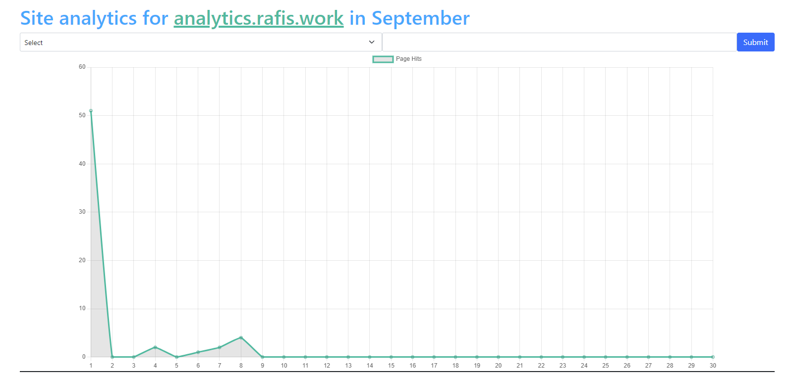
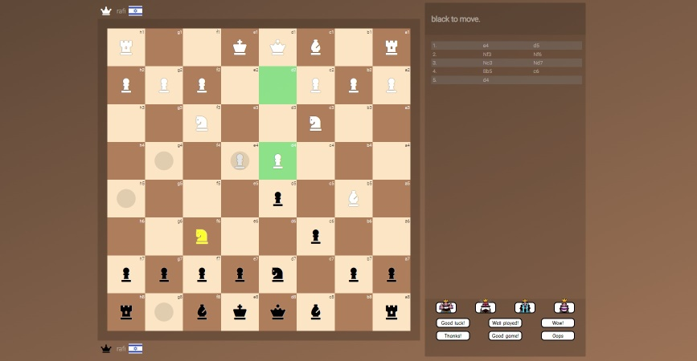
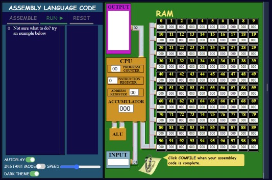
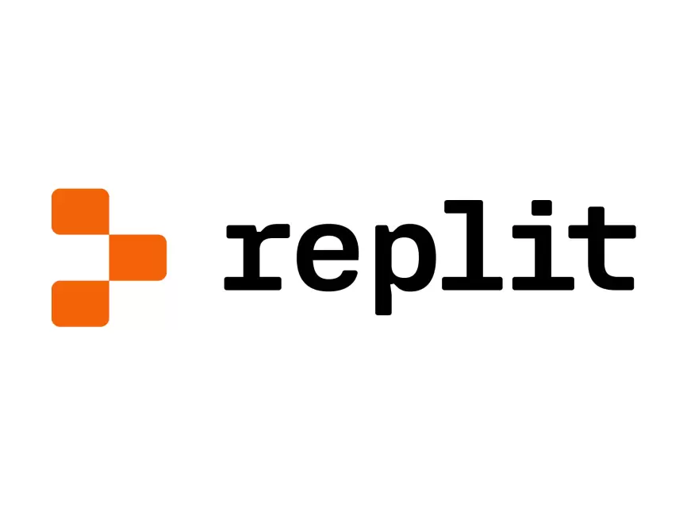
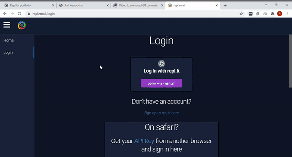
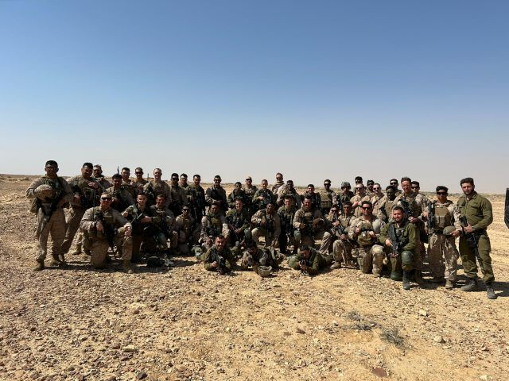

Rafi's Work


Web Analytics App
For my CS50x final project, I conceptualized and developed an analytics platform that allows me to efficiently gather, store, and present data from various websites, all under my domain "rafis.work." The main goal was to create an insightful analytics tool that provides valuable insights about user interactions with my websites.
Data Collection:
I leveraged the power of SQLite3 in Python to store the collected data. The data collected from each page view includes:
-User location (determined by device timezone)
-Referrer information (to track traffic sources)
-Page pathname and domain (for identifying popular pages)
-Timestamp of the visit
-User's browser details
-Device information
Efficient Data Handling:
Efficiency was a priority, especially as the dataset grows. To ensure efficient data handling, I utilized tactful SQL queries, taught to me by CS50, to save valuable loading time.
Security Measures:
Security was a top concern throughout the development process. To safeguard data integrity, I implemented both front-end and back-end checks. Each "hit" sent to the server is checked for the presence of my own domain "rafis.work." This ensures that only authorized websites within my domain can use the analytics server.
User-Friendly Presentation:
On the frontend, I harnessed the power of Jinja and Chart.js to present the data in a user-friendly manner. I created a form that enables users to select specific months or years to view data from a particular time period. To mitigate potential security risks, I've incorporated backend checks to validate user inputs.
Inspiration:
The inspiration behind this project stems from the need for an accessible and affordable analytics solution for my personal websites. Similar services in the market come with a price tag, making them less feasible for students like myself. With my analytics app, I've created a functional alternative that caters to my analytics needs.


Chess Online
As a web developer, I took on the challenge of creating an online chess game from scratch. The goal was to allow users to play anyone live, just like popular chess websites such as chess.com. One of the main challenges I faced was learning how to make a multiplayer game server in Python. I spent many hours researching and experimenting with different libraries and frameworks to ensure a smooth and seamless user experience. Additionally, my experience in front-end development allowed me to create a visually appealing and user-friendly interface for the game. I was able to apply my knowledge of HTML, CSS, and JavaScript to style the game and ensure it was easy to navigate for users. Overall, this project allowed me to push my limits as a web developer and strengthen my skills in both back-end and front-end development.


CPU Visual Emulator
I took on the challenge of recreating the Little Man Computer system in a website. I developed the emulator from scratch and also created a code editor for the assembly code with syntax highlighting similar to that of a Python IDE. To make the emulator more visually engaging, I used blobs that carry numbers to illustrate the computer's operations. The inspiration for this project came from my experience in computer science class where we were taught about the Little Man Computer system using a dated website. I saw this as an opportunity to challenge myself and improve on the outdated website by creating a modern, interactive platform that others could use to learn and understand the system better.
Working on the Little Man Computer project was a tremendous learning experience for me as it taught me how to work on and manage large websites. The project was significant and complex, with over 3,000 lines of JavaScript code just for the functionality alone. The sheer size of the project helped me understand the importance of breaking it down into smaller, more manageable components. I learned how to organize my code, keep track of dependencies, and troubleshoot problems that arose along the way. This project also taught me the value of time management, as it required a significant investment of time and effort to complete.
Rafi's Experience In Teams


Replit Ventures
Replit ventures is an exclusive incubator program (where less than 5% of applications were accepted) providing a grant, excellent technical and business mentorship, weekly workshops with guest speakers, networking opportunities and a platform for your product to gain exposure.
As a part of a team project, I worked on developing a mail server named DogeMail (originally named repl.email) with my colleague, Marcus Weinberger. Our project was selected for Replit Ventures, a prestigious startup incubator program. During the program, we received valuable mentorship from experienced professionals in the industry, which helped us refine our project.
Our project's goal was to create an email service from scratch, aiming to enhance my skills in both front-end and back-end development. As a key contributor to the project, I took charge of designing and developing the entire front-end interface, while also assisting in certain aspects of the back-end.
For the back-end implementation, we used Python to build a robust mail server, utilizing the Flask framework to serve the HTML, CSS, and JavaScript components. As the sole front-end developer, I faced the challenge of managing the project's scale. This experience forced me to make use of industry best practices, such as ensuring code readability and maintaining a well-organized structure.
Working in collaboration with my friend Marcus Weinberger, we received invaluable experience on group work. My focus was on building an easy to use interface for the email application.
Our primary objective was to expand our knowledge and practice web development in teams. Although the project remains unfinished, I successfully conceptualized and developed a custom design for the email application. Progress was made on various components, including the homepage, inbox elements, and the compose mail page.

Military Experience
As an IDF paratrooper, I gained valuable experience working as part of a team in high-stress situations. Effective communication, trust, and teamwork were critical to our success. Working in such an intense and fast-paced environment taught me how to stay focused, keep calm under pressure, and rely on my teammates to achieve our goals. These skills have translated well into other areas of my life, and I am confident that my experience in the IDF has prepared me to be a strong team player in any setting.
During my service in the IDF, I had the opportunity to join the newly formed unit, Sufa. This unit operates similarly to the US Marines JTAC, providing tactical support to ground forces in combat situations. As part of my training, I was fortunate enough to spend a week with American Marines JTACs, where I learned valuable lessons in teamwork and how to work effectively with foreign allies in times of war. This experience not only taught me important military tactics and techniques but also gave me a broader understanding of how different units can work together to achieve a common goal. I am proud to have been a part of this unit and have gained skills and knowledge that I believe will be valuable in any team setting.